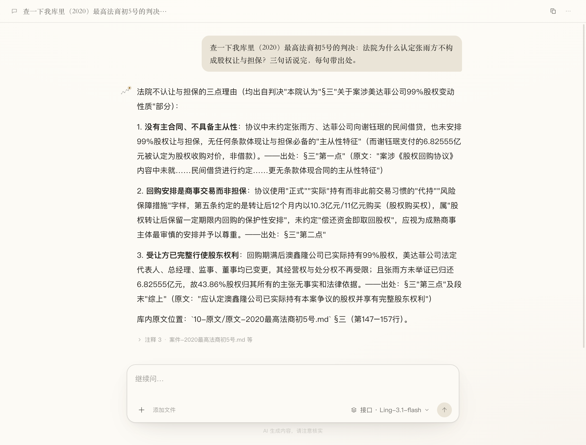
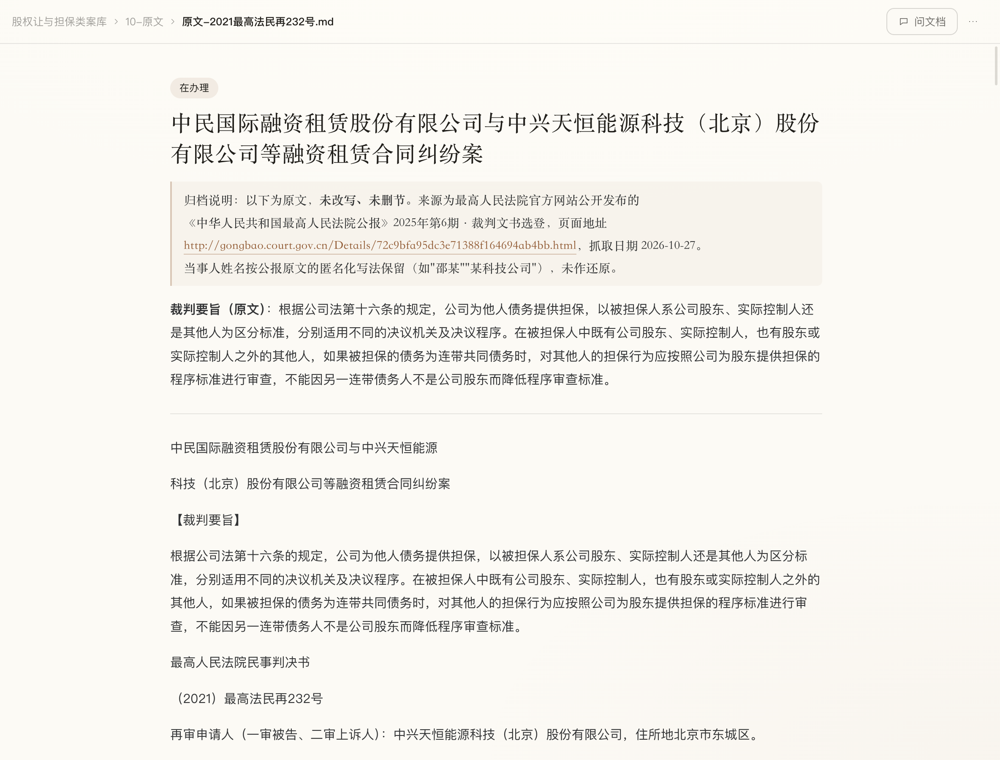
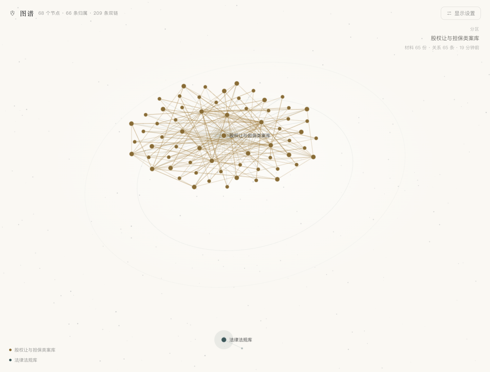

每个答案，
都能翻回原文那一行
把案卷、合同、制度、会议记录丢进去。问一句，它答一句——每个结论后面都标着哪份文件、第几行，点一下翻到那儿。资料不上传，全在你自己的电脑里。

真实界面：答案里的「§三第一点」「第 147–157 行」都指得回库里那一行，注释还能展开看引文原文。
它不比别人更会说话，
它比别人的话更能查
市面上的 AI 都能给你一段读起来很有道理的答案。我们多做的，是让这段答案能被你当场核对。
说到行号
答案里写着 §三第一点、第 147–157 行——指到库里第几份文件的第几行。点一下翻过去，自己看那一段原话。
库里没有，就说没有
它只答你库里有材料的东西。翻不到就直说「库里没有关于××的材料」，并且把这条缺口记下来——不拿一段漂亮话填空。
资料不上传
没有云端账号，没有同步，没有「为了改进服务收集数据」。库就是你文件夹里的一堆 Markdown，断网也能打开、能翻、能搜。
答错了，你改一遍它就记住
「不对，我们的做法是这样」——这句话会被写进库里。下次同一个问题，它按你说的答。它会越用越像你们。
每次问答都落盘
问题、答案、引用快照写进 logs/qa.jsonl，谁在哪天问了什么、依据哪几行，事后随时能复跑。
引文靠脚本核，不靠模型自觉
引文和原文逐字对，对不上就不许它给这条引用。样板库 16 条引文全部命中，0 条通不过还留着。
库里没有，它明说是缺口
问它库里没有的东西，它不拿一段读起来很有道理的话填空，而是告诉你缺哪一块——这条缺口还能进待办。
材料丢进去，它自己归位
4 份最高法公报判决丢进去，出来 8 个分区、65 份文档：原文、案件卡片、当事人、时间线、要素表、法条、主题，一层层长出来。你不用建文件夹，也不用写标签。

阅读页：判决原文一个字没改，行号对得上；顶上挂着案子进行到哪一步，面包屑随时退回上一级。8 个分区 · 65 份文档 · 全部在本机。
常见格式直接丢
PDF、Word、Excel、PPT、扫描件、录音，丢进去自动转成能读的文本，不用你先整理一遍。
双链自己在长
同一份材料被两处引用，它自己连起来。65 份文档之间长出 209 条双链，死链 0。
库是你的，不是我们的
就是一文件夹的 Markdown。卸载了软件资料还在，用 Obsidian 或任何编辑器都能直接打开。
一屏看清楚：
你的库里，什么连着什么
每个点是一份材料，每条线是一次引用。按分区上色：一个案子一团，共享的法规库单独一团。空着的那块，就是你们还没写的东西。

真实界面：68 个节点 · 66 条归属 · 209 条双链。滚轮缩放、拖着走；点一下，左边的目录跟着定位到那篇。
点一下就到那篇
图上任意一点，直接打开对应的文档；反过来，文档里的每个双链也能跳回去。
找孤岛
哪个分区线少、哪个点孤零零挂着——那就是你们有材料没人用、或该写的东西还没写。
不是装饰
这张图是从库里真实的双链算出来的，不是画出来好看的示意图。加一篇材料，它就长一条线。
先说你的麻烦，
再说它怎么帮
不做什么都能干的助手。三种人，三件最烦的事——看看是不是你手上正压着的那件。
律师、法律工作者
案子多，材料乱，重点得自己一页页翻。复杂案子光把脉络理清就要几天，简单案子又全是查条款、核表述、改格式的重复劳动。
材料先归位，时间线、当事人、金额、争议焦点铺到一屏，对不上的地方标给你；缺哪份材料，记成清单去补。要起草文书，按你自己库里的写法起笔。
案件当事人
不懂法，先慌一半。一沓证据不知道哪份有用，说不清谁和谁是什么关系，网上越搜越乱，问律师一句话还得等。
把事从头到尾理顺：人物、时间、款项、每一步的法律关系摆在明处；该看哪条法、下一步往哪走，逐条讲给你听；要交的材料，帮你写出来。
企业、机构、部门
合同散在每个人的电脑里，一份合同三个版本；出了纠纷，材料要从三四个人那儿慢慢收；经手的人一走，前面怎么谈的、哪条让过步，全得从头问。
合同、纠纷、投诉、处罚收进同一个库，按主题归位、旧版本标出来；审合同时对着自家模板和以往条款逐条比，哪条被动过一眼看见；要出说明、答辩、内部备忘，照你们以前的口径起草。
AI 生成内容无法做到绝对准确，正式使用的材料请务必人工审核。
装上，把资料丢进去
双击安装，第一次打开需要填一枚体验码（下面有），然后就可以把自己的文件拖进去。不要注册，不要登录。
历史版本都在 GitHub Releases。国内下载慢的话加微信 zzzlhao，我直接发你。
安装后第一次打开要填一枚体验码。加微信 zzzlhao，备注「摇光」，我把码和安装指引一起发你。免费，只是想看看你在拿它做什么。
第一次打开可能会被 macOS 拦一下（提示「无法验证开发者」）。在图标上右键 → 打开，再点一次「打开」就行，只需要一次。还是不行就截图发我。
下载、拖进「应用程序」
打开 dmg，把摇光拖到 Applications 文件夹，双击启动。
填体验码
第一次启动会弹一个输入框，粘贴我发你的那串码，回车。
把文件拖进去
把案卷、合同、录音拖进窗口，等它整理完，就可以开始问了。
现在只做一件事：
让用得着的人先用起来
软件本体内测、公测期间免费使用，不收一分钱。唯一需要你自己准备的，是一个能调用的大模型 API。
- 体验码按需发，不收费
- 装在你的电脑上，库不往云上同步
- 版本更新直接换包
- 用你自己的模型账号，按厂商价格计费
- 建议 DeepSeek、智谱、火山引擎、阿里云等官方渠道
- 要完全不外传，也可以做纯本地部署
如果你想把摇光落到团队 / 事务所——建库、清洗归位、教会你们的人怎么问、定期体检，或者要纯本地部署、私有化方案，都可以直接找我聊：加微信 zzzlhao，备注「摇光定制」。
你会问的几件事
我的资料会被上传吗？
摇光本身没有连接任何服务器，不上传你的任何数据——库文件、索引、日志，全部只在你自己的电脑上。
但有一件事要说清楚：回答问题时，你问的那句话和它检索到的几段原文，会发给你接入的大模型厂商（不然模型没法回答）。所以建议使用 DeepSeek、智谱、火山引擎、阿里云等可靠的官方 API 渠道，不要用来源不明的中转。
如果连这一步也不想出去，可以做纯本地化部署：模型也跑在你自己的机器上，一个字都不出本机。有需要请加微信 zzzlhao，备注「摇光本地部署需求」。
能断网用吗？
软件本身不联网也能运行：库能打开、能翻、能搜。差别在于线上模型调用需要联网——让它回答问题，得连到你接入的模型厂商。做纯本地部署的话，则全程无需联网。
它会不会编法条、编案例？
我们不许它答库里没有的东西：翻不到就明说「库里没有」，并把这条缺口记下来；引用要过脚本逐字比对，对不上就不许给这个引用。软件在构建层面对「编造」做了很多限制，编造概率已经很低。
但大模型终究不是零概率——实际拿它处理材料时，请务必对着原文仔细核查一遍。这也是它每条结论都标出处的用意：核对，只要点一下。
能放多少资料？
目前不设上限。我们测过约 2000 份材料，没有遇到问题。可能偶尔出现检索时间过长的情况——如果你有巨量文件的需求，或者用起来哪里不顺手，欢迎直接和开发者交流。
支持哪些设备？
目前支持 Mac（Apple 芯片） 和 Windows。手机端暂时不支持；也因为这一版的设计就是本地运行、不联网，所以同样没有网页版。
卸载之后我的资料怎么办？
资料是普通的 Markdown 文件，放在你自己的文件夹里。卸载软件不影响资料，用 Obsidian 或任何编辑器都能直接打开。